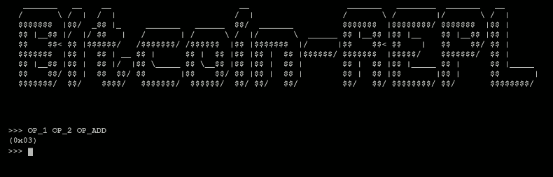

Bitcoin-REPL
This project is maintained by JASchilz


Bitcoin-REPL
Interactive interpreter for Bitcoin Script. See it in action at bitcoin-repl.com.

If you decide to use Bitcoin-REPL for a class, let me know!
Installation
Though you can freely use the official, hosted version of this project at bitcoin-repl.com, you can also easily run your own copy.
Bitcoin-REPL uses Bower for dependency management. Visit Bower.io for information on installing and using Bower.
Once you have Bower installed, clone this repository to your host, cd into the directory, run bower install , and point your web browser at index.html.
Use
Once in the Bitcoin-REPL terminal, try typing :help or :operations for more instructions.
Here are a few examples:
Enter a list of operations and press enter to evaluate:
>>> OP_1 OP_2 OP_ADD 'enter'
(0x03)
>>>
Pressing shift-enter will evaluate a single instruction:
>>> OP_1 OP_2 OP_ADD 'shift-enter'
>>> (0x01) OP_2 OP_ADD 'shift-enter'
>>> (0x01 0x02) OP_ADD 'shift-enter'
Stack contents are represented in parenthesis with the stack-head to the right.
Todo
Many of the operations are not yet implemented. However, this project is under active development and most or all operations will be added shortly.
See GitHub issue tracker for additional issues.
Getting Involved
Feel free to open pull requests or issues. GitHub is the canonical location of this project.
Here's the general sequence of events for contribution:
- Open an issue in the issue tracker.
- In any order:
- Submit a pull request with a failing test that demonstrates the issue/feature.
- Get acknowledgement/concurrence.
- Submit pull request that passes your test in (2). Include documentation, if appropriate.
I also welcome contributions in Bitcoin: